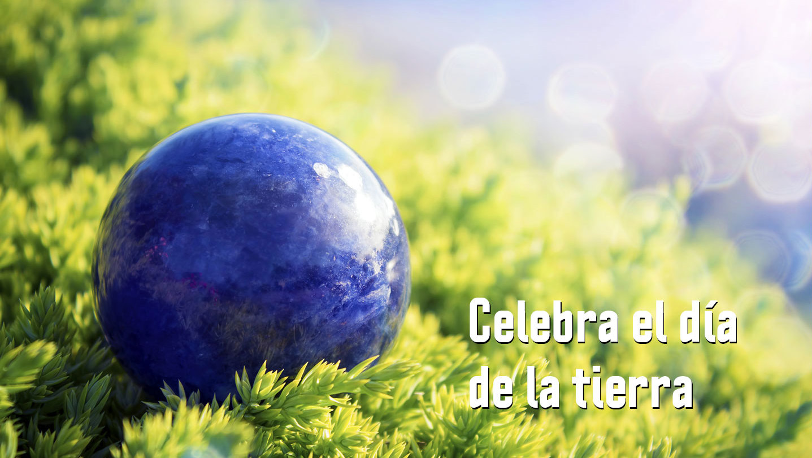

Reflexion
Ella depende de ti , tu dependes de ella , cuidala y valorara , mañana quiza sea tarde. Tu haces la direfencia. Ella te da todo a ti lo menos que puedes hacer es mostrarle lo mucho que lo aprecias.Haz la diferencia!
50%" height="50%" >
El Día de la Tierra es un día celebrado en muchos países el 22 de abril. Su promotor, el senador estadounidense Gaylord Nelson, instauró este día para crear una conciencia común a los problemas de la superpoblación, la producción de contaminación, la conservación de la biodiversidad y otras preocupaciones ambientales para proteger la Tierra. Es un día para rendir homenaje a nuestro planeta y reconocer a la Tierra como nuestro hogar y nuestra madre, así como lo han expresado distintas culturas a lo largo de la historia, demostrando la interdependencia entre sus ecosistemas y los seres vivos que la habitamos

Gaylord Nelson escogió la fecha de tal manera que se maximizara la participación en las universidades, ya que lo consideraba un encuentro entre maestros y alumnos. Determinó que la semana del 19 al 25 de abril era la mejor apuesta, ya que esta no coincidía con los exámenes o las vacaciones de primavera. Más aún, esta fecha no tenía ningún conflicto con celebraciones religiosas como la Pascua o , y era demasiado tarde en primavera para tener un clima decente. Más estudiantes preferirían estar en clase y habría menos competencia con otros eventos de media semana –así que eligió el miércoles 22 de abril. El día también coincidió con el aniversario del natalicio de John Muir, notable conservacionista.

Dar click aqui
La idea de que la fecha fuera escogida para celebrar el centenario de Lenin, aún persiste en algunos cuarteles.